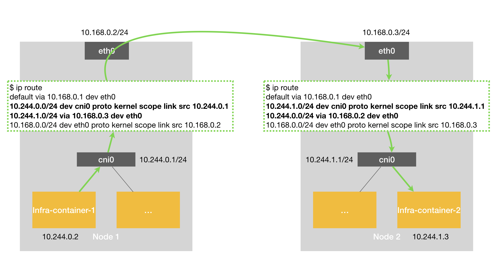
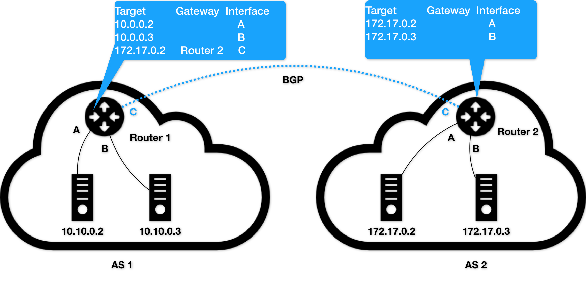
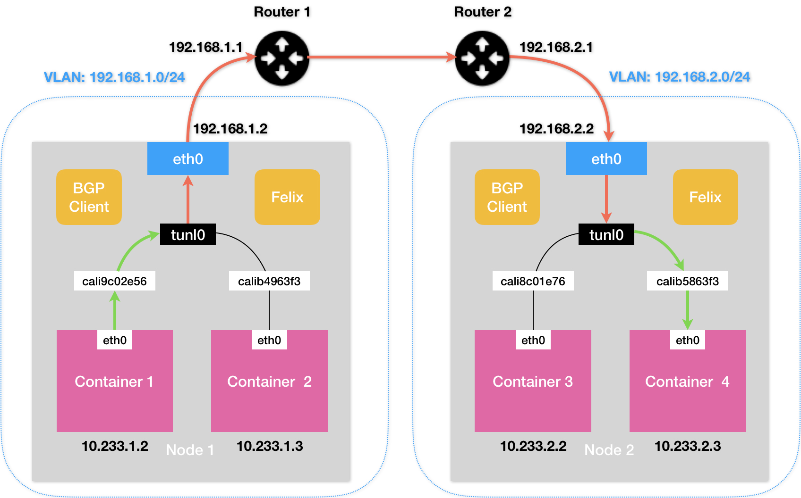
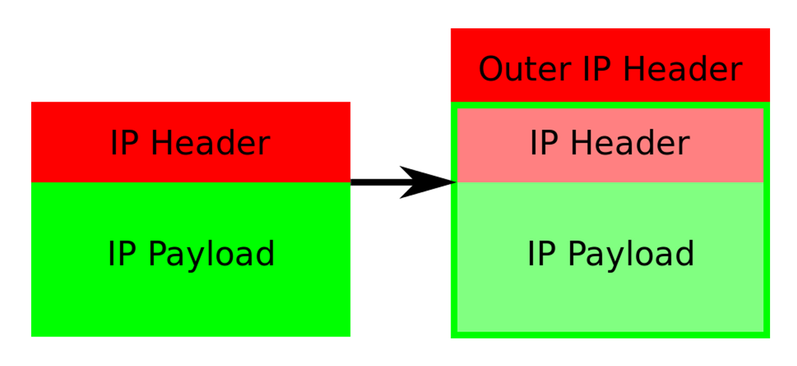

# 解读 Kubernetes 三层网络方案
在上一篇文章中，我以网桥类型的 Flannel 插件为例，为你讲解了 Kubernetes 里容器网络和 CNI 插件的主要工作原理。不过，除了这种模式之外，还有一种纯三层（Pure Layer 3）网络方案非常值得你注意。其中的典型例子，莫过于 Flannel 的 host-gw 模式和 Calico 项目了。
我们先来看一下 Flannel 的 host-gw 模式。
它的工作原理非常简单，我用一张图就可以和你说清楚。为了方便叙述，接下来我会称这张图为 “host-gw 示意图”。

图 1 Flannel host-gw 示意图
假设现在，Node 1 上的 Infra-container-1，要访问 Node 2 上的 Infra-container-2。
当你设置 Flannel 使用 host-gw 模式之后，flanneld 会在宿主机上创建这样一条规则，以 Node 1 为例：
$ ip route
...
10.244.1.0/24 via 10.168.0.3 dev eth0
这条路由规则的含义是：目的 IP 地址属于 10.244.1.0/24 网段的 IP 包，应该经过本机的 eth0 设备发出去（即：dev eth0）；并且，它下一跳地址（next-hop）是 10.168.0.3（即：via 10.168.0.3）。
所谓下一跳地址就是：如果 IP 包从主机 A 发到主机 B，需要经过路由设备 X 的中转。那么 X 的 IP 地址就应该配置为主机 A 的下一跳地址。
而从 host-gw 示意图中我们可以看到，这个下一跳地址对应的，正是我们的目的宿主机 Node 2。
一旦配置了下一跳地址，那么接下来，当 IP 包从网络层进入链路层封装成帧的时候，eth0 设备就会使用下一跳地址对应的 MAC 地址，作为该数据帧的目的 MAC 地址。显然，这个 MAC 地址，正是 Node 2 的 MAC 地址。
这样，这个数据帧就会从 Node 1 通过宿主机的二层网络顺利到达 Node 2 上。
而 Node 2 的内核网络栈从二层数据帧里拿到 IP 包后，会 “看到” 这个 IP 包的目的 IP 地址是 10.244.1.3，即 Infra-container-2 的 IP 地址。这时候，根据 Node 2 上的路由表，该目的地址会匹配到第二条路由规则（也就是 10.244.1.0 对应的路由规则），从而进入 cni0 网桥，进而进入到 Infra-container-2 当中。
可以看到，host-gw 模式的工作原理，其实就是将每个 Flannel 子网（Flannel Subnet，比如：10.244.1.0/24）的 “下一跳”，设置成了该子网对应的宿主机的 IP 地址。
也就是说，这台 “主机”（Host）会充当这条容器通信路径里的 “网关”（Gateway）。这也正是 “host-gw” 的含义。
当然，Flannel 子网和主机的信息，都是保存在 Etcd 当中的。flanneld 只需要 WACTH 这些数据的变化，然后实时更新路由表即可。
注意：在 Kubernetes v1.7 之后，类似 Flannel、Calico 的 CNI 网络插件都是可以直接连接 Kubernetes 的 APIServer 来访问 Etcd 的，无需额外部署 Etcd 给它们使用。
而在这种模式下，容器通信的过程就免除了额外的封包和解包带来的性能损耗。根据实际的测试，host-gw 的性能损失大约在 10% 左右，而其他所有基于 VXLAN “隧道” 机制的网络方案，性能损失都在 20%~30% 左右。
当然，通过上面的叙述，你也应该看到，host-gw 模式能够正常工作的核心，就在于 IP 包在封装成帧发送出去的时候，会使用路由表里的 “下一跳” 来设置目的 MAC 地址。这样，它就会经过二层网络到达目的宿主机。
所以说，Flannel host-gw 模式必须要求集群宿主机之间是二层连通的。
需要注意的是，宿主机之间二层不连通的情况也是广泛存在的。比如，宿主机分布在了不同的子网（VLAN）里。但是，在一个 Kubernetes 集群里，宿主机之间必须可以通过 IP 地址进行通信，也就是说至少是三层可达的。否则的话，你的集群将不满足上一篇文章中提到的宿主机之间 IP 互通的假设（Kubernetes 网络模型）。当然，“三层可达” 也可以通过为几个子网设置三层转发来实现。
而在容器生态中，要说到像 Flannel host-gw 这样的三层网络方案，我们就不得不提到这个领域里的“龙头老大”Calico 项目了。
实际上，Calico 项目提供的网络解决方案，与 Flannel 的 host-gw 模式，几乎是完全一样的。也就是说，Calico 也会在每台宿主机上，添加一个格式如下所示的路由规则：
<目的容器IP地址段> via <网关的IP地址> dev eth0
其中，网关的 IP 地址，正是目的容器所在宿主机的 IP 地址。
而正如前所述，这个三层网络方案得以正常工作的核心，是为每个容器的 IP 地址，找到它所对应的、“下一跳” 的网关。
不过，不同于 Flannel 通过 Etcd 和宿主机上的 flanneld 来维护路由信息的做法，Calico 项目使用了一个 “重型武器” 来自动地在整个集群中分发路由信息。
这个 “重型武器”，就是 BGP。
**BGP 的全称是 Border Gateway Protocol，即：边界网关协议。** 它是一个 Linux 内核原生就支持的、专门用在大规模数据中心里维护不同的 “自治系统” 之间路由信息的、无中心的路由协议。
这个概念可能听起来有点儿 “吓人”，但实际上，我可以用一个非常简单的例子来为你讲清楚。

图 2 自治系统
在这个图中，我们有两个自治系统（Autonomous System，简称为 AS）：AS 1 和 AS 2。而所谓的一个自治系统，指的是一个组织管辖下的所有 IP 网络和路由器的全体。你可以把它想象成一个小公司里的所有主机和路由器。在正常情况下，自治系统之间不会有任何 “来往”。
但是，如果这样两个自治系统里的主机，要通过 IP 地址直接进行通信，我们就必须使用路由器把这两个自治系统连接起来。
比如，AS 1 里面的主机 10.10.0.2，要访问 AS 2 里面的主机 172.17.0.3 的话。它发出的 IP 包，就会先到达自治系统 AS 1 上的路由器 Router 1。
而在此时，Router 1 的路由表里，有这样一条规则，即：目的地址是 172.17.0.2 包，应该经过 Router 1 的 C 接口，发往网关 Router 2（即：自治系统 AS 2 上的路由器）。
所以 IP 包就会到达 Router 2 上，然后经过 Router 2 的路由表，从 B 接口出来到达目的主机 172.17.0.3。
但是反过来，如果主机 172.17.0.3 要访问 10.10.0.2，那么这个 IP 包，在到达 Router 2 之后，就不知道该去哪儿了。因为在 Router 2 的路由表里，并没有关于 AS 1 自治系统的任何路由规则。
所以这时候，网络管理员就应该给 Router 2 也添加一条路由规则，比如：目标地址是 10.10.0.2 的 IP 包，应该经过 Router 2 的 C 接口，发往网关 Router 1。
像上面这样负责把自治系统连接在一起的路由器，我们就把它形象地称为：边界网关。它跟普通路由器的不同之处在于，它的路由表里拥有其他自治系统里的主机路由信息。
上面的这部分原理，相信你理解起来应该很容易。毕竟，路由器这个设备本身的主要作用，就是连通不同的网络。
但是，你可以想象一下，假设我们现在的网络拓扑结构非常复杂，每个自治系统都有成千上万个主机、无数个路由器，甚至是由多个公司、多个网络提供商、多个自治系统组成的复合自治系统呢？
这时候，如果还要依靠人工来对边界网关的路由表进行配置和维护，那是绝对不现实的。
而这种情况下，BGP 大显身手的时刻就到了。
在使用了 BGP 之后，你可以认为，在每个边界网关上都会运行着一个小程序，它们会将各自的路由表信息，通过 TCP 传输给其他的边界网关。而其他边界网关上的这个小程序，则会对收到的这些数据进行分析，然后将需要的信息添加到自己的路由表里。
这样，图 2 中 Router 2 的路由表里，就会自动出现 10.10.0.2 和 10.10.0.3 对应的路由规则了。
所以说，所谓 BGP，就是在大规模网络中实现节点路由信息共享的一种协议。
而 BGP 的这个能力，正好可以取代 Flannel 维护主机上路由表的功能。而且，BGP 这种原生就是为大规模网络环境而实现的协议，其可靠性和可扩展性，远非 Flannel 自己的方案可比。
需要注意的是，BGP 协议实际上是最复杂的一种路由协议。我在这里的讲述和所举的例子，仅是为了能够帮助你建立对 BGP 的感性认识，并不代表 BGP 真正的实现方式。
接下来，我们还是回到 Calico 项目上来。
在了解了 BGP 之后，Calico 项目的架构就非常容易理解了。它由三个部分组成：
Calico 的 CNI 插件。这是 Calico 与 Kubernetes 对接的部分。我已经在上一篇文章中，和你详细分享了 CNI 插件的工作原理，这里就不再赘述了。
Felix。它是一个 DaemonSet，负责在宿主机上插入路由规则（即：写入 Linux 内核的 FIB 转发信息库），以及维护 Calico 所需的网络设备等工作。
BIRD。它就是 BGP 的客户端，专门负责在集群里分发路由规则信息。
** 除了对路由信息的维护方式之外，Calico 项目与 Flannel 的 host-gw 模式的另一个不同之处，就是它不会在宿主机上创建任何网桥设备。** 这时候，Calico 的工作方式，可以用一幅示意图来描述，如下所示（在接下来的讲述中，我会统一用 “BGP 示意图” 来指代它）：

图 3 Calico 工作原理
其中的绿色实线标出的路径，就是一个 IP 包从 Node 1 上的 Container 1，到达 Node 2 上的 Container 4 的完整路径。
可以看到，Calico 的 CNI 插件会为每个容器设置一个 Veth Pair 设备，然后把其中的一端放置在宿主机上（它的名字以 cali 前缀开头）。
此外，由于 Calico 没有使用 CNI 的网桥模式，Calico 的 CNI 插件还需要在宿主机上为每个容器的 Veth Pair 设备配置一条路由规则，用于接收传入的 IP 包。比如，宿主机 Node 2 上的 Container 4 对应的路由规则，如下所示：
10.233.2.3 dev cali5863f3 scope link
即：发往 10.233.2.3 的 IP 包，应该进入 cali5863f3 设备。
基于上述原因，Calico 项目在宿主机上设置的路由规则，肯定要比 Flannel 项目多得多。不过，Flannel host-gw 模式使用 CNI 网桥的主要原因，其实是为了跟 VXLAN 模式保持一致。否则的话，Flannel 就需要维护两套 CNI 插件了。
有了这样的 Veth Pair 设备之后，容器发出的 IP 包就会经过 Veth Pair 设备出现在宿主机上。然后，宿主机网络栈就会根据路由规则的下一跳 IP 地址，把它们转发给正确的网关。接下来的流程就跟 Flannel host-gw 模式完全一致了。
其中，这里最核心的 “下一跳” 路由规则，就是由 Calico 的 Felix 进程负责维护的。这些路由规则信息，则是通过 BGP Client 也就是 BIRD 组件，使用 BGP 协议传输而来的。
而这些通过 BGP 协议传输的消息，你可以简单地理解为如下格式：
[BGP消息]
我是宿主机192.168.1.3
10.233.2.0/24网段的容器都在我这里
这些容器的下一跳地址是我
不难发现，Calico 项目实际上将集群里的所有节点，都当作是边界路由器来处理，它们一起组成了一个全连通的网络，互相之间通过 BGP 协议交换路由规则。这些节点，我们称为 BGP Peer。
需要注意的是，**Calico 维护的网络在默认配置下，是一个被称为 “Node-to-Node Mesh” 的模式。** 这时候，每台宿主机上的 BGP Client 都需要跟其他所有节点的 BGP Client 进行通信以便交换路由信息。但是，随着节点数量 N 的增加，这些连接的数量就会以 N² 的规模快速增长，从而给集群本身的网络带来巨大的压力。
所以，Node-to-Node Mesh 模式一般推荐用在少于 100 个节点的集群里。而在更大规模的集群中，你需要用到的是一个叫作 Route Reflector 的模式。
在这种模式下，Calico 会指定一个或者几个专门的节点，来负责跟所有节点建立 BGP 连接从而学习到全局的路由规则。而其他节点，只需要跟这几个专门的节点交换路由信息，就可以获得整个集群的路由规则信息了。
这些专门的节点，就是所谓的 Route Reflector 节点，它们实际上扮演了 “中间代理” 的角色，从而把 BGP 连接的规模控制在 N 的数量级上。
此外，我在前面提到过，Flannel host-gw 模式最主要的限制，就是要求集群宿主机之间是二层连通的。而这个限制对于 Calico 来说，也同样存在。
举个例子，假如我们有两台处于不同子网的宿主机 Node 1 和 Node 2，对应的 IP 地址分别是 192.168.1.2 和 192.168.2.2。需要注意的是，这两台机器通过路由器实现了三层转发，所以这两个 IP 地址之间是可以相互通信的。
而我们现在的需求，还是 Container 1 要访问 Container 4。
按照我们前面的讲述，Calico 会尝试在 Node 1 上添加如下所示的一条路由规则：
10.233.2.0/16 via 192.168.2.2 eth0
但是，这时候问题就来了。
上面这条规则里的下一跳地址是 192.168.2.2，可是它对应的 Node 2 跟 Node 1 却根本不在一个子网里，没办法通过二层网络把 IP 包发送到下一跳地址。
在这种情况下，你就需要为 Calico 打开 IPIP 模式。
我把这个模式下容器通信的原理，总结成了一张图片，如下所示（接下来我会称之为：IPIP 示意图）：

图 4 Calico IPIP 模式工作原理
在 Calico 的 IPIP 模式下，Felix 进程在 Node 1 上添加的路由规则，会稍微不同，如下所示：
10.233.2.0/24 via 192.168.2.2 tunl0
可以看到，尽管这条规则的下一跳地址仍然是 Node 2 的 IP 地址，但这一次，要负责将 IP 包发出去的设备，变成了 tunl0。注意，是 T-U-N-L-0，而不是 Flannel UDP 模式使用的 T-U-N-0（tun0），这两种设备的功能是完全不一样的。
Calico 使用的这个 tunl0 设备，是一个 IP 隧道（IP tunnel）设备。
在上面的例子中，IP 包进入 IP 隧道设备之后，就会被 Linux 内核的 IPIP 驱动接管。IPIP 驱动会将这个 IP 包直接封装在一个宿主机网络的 IP 包中，如下所示：

图 5 IPIP 封包方式
其中，经过封装后的新的 IP 包的目的地址（图 5 中的 Outer IP Header 部分），正是原 IP 包的下一跳地址，即 Node 2 的 IP 地址：192.168.2.2。
而原 IP 包本身，则会被直接封装成新 IP 包的 Payload。
这样，原先从容器到 Node 2 的 IP 包，就被伪装成了一个从 Node 1 到 Node 2 的 IP 包。
由于宿主机之间已经使用路由器配置了三层转发，也就是设置了宿主机之间的 “下一跳”。所以这个 IP 包在离开 Node 1 之后，就可以经过路由器，最终 “跳” 到 Node 2 上。
这时，Node 2 的网络内核栈会使用 IPIP 驱动进行解包，从而拿到原始的 IP 包。然后，原始 IP 包就会经过路由规则和 Veth Pair 设备到达目的容器内部。
以上，就是 Calico 项目主要的工作原理了。
不难看到，当 Calico 使用 IPIP 模式的时候，集群的网络性能会因为额外的封包和解包工作而下降。在实际测试中，Calico IPIP 模式与 Flannel VXLAN 模式的性能大致相当。所以，在实际使用时，如非硬性需求，我建议你将所有宿主机节点放在一个子网里，避免使用 IPIP。
不过，通过上面对 Calico 工作原理的讲述，你应该能发现这样一个事实：
如果 Calico 项目能够让宿主机之间的路由设备（也就是网关），也通过 BGP 协议 “学习” 到 Calico 网络里的路由规则，那么从容器发出的 IP 包，不就可以通过这些设备路由到目的宿主机了么？
比如，只要在上面 “IPIP 示意图” 中的 Node 1 上，添加如下所示的一条路由规则：
10.233.2.0/24 via 192.168.1.1 eth0
然后，在 Router 1 上（192.168.1.1），添加如下所示的一条路由规则：
10.233.2.0/24 via 192.168.2.1 eth0
那么 Container 1 发出的 IP 包，就可以通过两次 “下一跳”，到达 Router 2（192.168.2.1）了。以此类推，我们可以继续在 Router 2 上添加 “下一条” 路由，最终把 IP 包转发到 Node 2 上。
遗憾的是，上述流程虽然简单明了，但是在 Kubernetes 被广泛使用的公有云场景里，却完全不可行。
这里的原因在于：公有云环境下，宿主机之间的网关，肯定不会允许用户进行干预和设置。
当然，在大多数公有云环境下，宿主机（公有云提供的虚拟机）本身往往就是二层连通的，所以这个需求也不强烈。
不过，在私有部署的环境下，宿主机属于不同子网（VLAN）反而是更加常见的部署状态。这时候，想办法将宿主机网关也加入到 BGP Mesh 里从而避免使用 IPIP，就成了一个非常迫切的需求。
而在 Calico 项目中，它已经为你提供了两种将宿主机网关设置成 BGP Peer 的解决方案。
第一种方案，就是所有宿主机都跟宿主机网关建立 BGP Peer 关系。
这种方案下，Node 1 和 Node 2 就需要主动跟宿主机网关 Router 1 和 Router 2 建立 BGP 连接。从而将类似于 10.233.2.0/24 这样的路由信息同步到网关上去。
需要注意的是，这种方式下，Calico 要求宿主机网关必须支持一种叫作 Dynamic Neighbors 的 BGP 配置方式。这是因为，在常规的路由器 BGP 配置里，运维人员必须明确给出所有 BGP Peer 的 IP 地址。考虑到 Kubernetes 集群可能会有成百上千个宿主机，而且还会动态地添加和删除节点，这时候再手动管理路由器的 BGP 配置就非常麻烦了。而 Dynamic Neighbors 则允许你给路由器配置一个网段，然后路由器就会自动跟该网段里的主机建立起 BGP Peer 关系。
不过，相比之下，我更愿意推荐第二种方案。
这种方案，是使用一个或多个独立组件负责搜集整个集群里的所有路由信息，然后通过 BGP 协议同步给网关。而我们前面提到，在大规模集群中，Calico 本身就推荐使用 Route Reflector 节点的方式进行组网。所以，这里负责跟宿主机网关进行沟通的独立组件，直接由 Route Reflector 兼任即可。
更重要的是，这种情况下网关的 BGP Peer 个数是有限并且固定的。所以我们就可以直接把这些独立组件配置成路由器的 BGP Peer，而无需 Dynamic Neighbors 的支持。
当然，这些独立组件的工作原理也很简单：它们只需要 WATCH Etcd 里的宿主机和对应网段的变化信息，然后把这些信息通过 BGP 协议分发给网关即可。
总结
在本篇文章中，我为你详细讲述了 Fannel host-gw 模式和 Calico 这两种纯三层网络方案的工作原理。
需要注意的是，在大规模集群里，三层网络方案在宿主机上的路由规则可能会非常多，这会导致错误排查变得困难。此外，在系统故障的时候，路由规则出现重叠冲突的概率也会变大。
基于上述原因，如果是在公有云上，由于宿主机网络本身比较 “直白”，我一般会推荐更加简单的 Flannel host-gw 模式。
但不难看到，在私有部署环境里，Calico 项目才能够覆盖更多的场景，并为你提供更加可靠的组网方案和架构思路。
思考题
你能否能总结一下三层网络方案和 “隧道模式” 的异同，以及各自的优缺点？